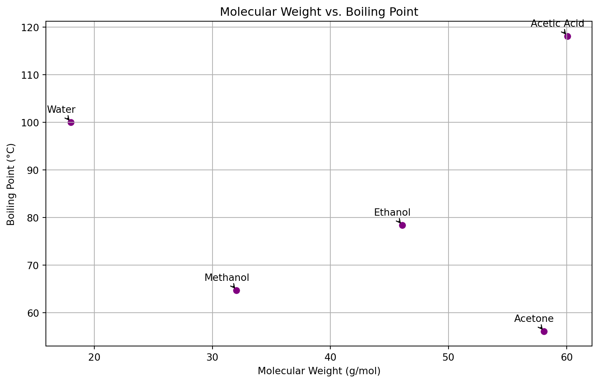

import pandas as pd
import matplotlib.pyplot as pltMatplotlib
Creating visualizations is a crucial part of understanding and presenting data in chemistry. Matplotlib, a versatile plotting library in Python, allows for detailed and customized visualizations. This tutorial will guide you through the basics of Matplotlib, focusing on chemistry-related data visualization. By the end, you’ll know how to create line plots, bar charts, and scatter plots, which are commonly used in chemistry for displaying trends, comparisons, and relationships in data.
Setting Up Your Environment
First, ensure you have Matplotlib installed. If not, you can install it using pip:
pip install matplotlibYou’ll also need Pandas for managing your data before plotting:
pip install pandasImporting Libraries
Start by importing the necessary libraries:
Example Data
Let’s create a DataFrame with some chemistry-related data:
data = {
'Compound': ['Water', 'Ethanol', 'Acetic Acid', 'Acetone', 'Methanol'],
'Boiling Point (°C)': [100, 78.37, 118.1, 56.05, 64.7],
'Molecular Weight (g/mol)': [18.015, 46.07, 60.052, 58.08, 32.04]
}
df = pd.DataFrame(data)
df| Compound | Boiling Point (°C) | Molecular Weight (g/mol) | |
|---|---|---|---|
| 0 | Water | 100.00 | 18.015 |
| 1 | Ethanol | 78.37 | 46.070 |
| 2 | Acetic Acid | 118.10 | 60.052 |
| 3 | Acetone | 56.05 | 58.080 |
| 4 | Methanol | 64.70 | 32.040 |
Creating a Line Plot
A line plot is useful for visualizing changes in a variable, such as the boiling point or molecular weight of compounds.
plt.figure(figsize=(10, 6)) # Set the figure size
plt.plot(df['Compound'], df['Boiling Point (°C)'], marker='o', linestyle='-', color='blue')
plt.title('Boiling Points of Compounds')
plt.xlabel('Compound')
plt.ylabel('Boiling Point (°C)')
plt.grid(True)
plt.xticks(rotation=45) # Rotate the x-axis labels for better readability
plt.show()Creating a Bar Chart
Bar charts are great for comparing values across different categories, like comparing the molecular weights of various compounds.
plt.figure(figsize=(10, 6))
plt.bar(df['Compound'], df['Molecular Weight (g/mol)'], color='green')
plt.title('Molecular Weights of Compounds')
plt.xlabel('Compound')
plt.ylabel('Molecular Weight (g/mol)')
plt.xticks(rotation=45)
plt.show()Creating a Scatter Plot
Scatter plots help visualize the relationship between two variables. Let’s plot the relationship between molecular weight and boiling point.
plt.figure(figsize=(10, 6))
plt.scatter(df['Molecular Weight (g/mol)'], df['Boiling Point (°C)'], color='red')
plt.title('Relationship Between Molecular Weight and Boiling Point')
plt.xlabel('Molecular Weight (g/mol)')
plt.ylabel('Boiling Point (°C)')
plt.grid(True)
plt.show()Customizing Plots
Matplotlib offers extensive customization options. Here are a few:
- Changing Colors and Markers: You can change the color by setting the color parameter and the marker style with marker.
- Adding a Legend: Use plt.legend() to add a legend if your plot has multiple lines or markers.
- Setting Grid Lines: Enable grid lines with plt.grid(True) for better readability.
- Adjusting Ticks: Use plt.xticks() and plt.yticks() to customize tick marks on the axes.
Saving Plots
You can save your plots to files using plt.savefig():
plt.savefig('plot.png') # Saves the last plotted figureSubplots
Subplots allow you to display multiple plots in a single figure. This is useful for comparing different datasets or aspects of your data side by side.
fig, ax = plt.subplots(1, 2, figsize=(14, 6)) # 1 row, 2 columns
# First subplot
ax[0].bar(df['Compound'], df['Molecular Weight (g/mol)'], color='skyblue')
ax[0].set_title('Molecular Weights of Compounds')
ax[0].set_xlabel('Compound')
ax[0].set_ylabel('Molecular Weight (g/mol)')
ax[0].tick_params(axis='x', rotation=45)
# Second subplot
ax[1].scatter(df['Molecular Weight (g/mol)'], df['Boiling Point (°C)'], color='salmon')
ax[1].set_title('Molecular Weight vs. Boiling Point')
ax[1].set_xlabel('Molecular Weight (g/mol)')
ax[1].set_ylabel('Boiling Point (°C)')
plt.tight_layout() # Adjust layout to not overlap
plt.show()Note the tight_layout(), which might be required to have nice looking non-overlapping plots.
Customizing Line Styles and Markers
You can customize the appearance of lines and markers to make your plots clearer and more visually distinct.
plt.figure(figsize=(10, 6))
plt.plot(df['Compound'], df['Boiling Point (°C)'],
color='darkred', linestyle='--', marker='^', markersize=10, linewidth=2,
label='Boiling Point')
plt.title('Boiling Points of Compounds')
plt.xlabel('Compound')
plt.ylabel('Boiling Point (°C)')
plt.legend()
plt.xticks(rotation=45)
plt.grid(True)
plt.show()Adding Annotations
Annotations can be used to highlight specific points or features in your plots, such as identifying a compound with an unusually high or low boiling point.
plt.figure(figsize=(10, 6))
plt.scatter(df['Molecular Weight (g/mol)'], df['Boiling Point (°C)'], color='purple')
# Highlight the point for Acetic Acid
for i, row in df.iterrows():
bp = row['Boiling Point (°C)']
mw = row['Molecular Weight (g/mol)']
plt.annotate(row['Compound'], (mw, bp),
textcoords="offset points", xytext=(-10,10), ha='center', arrowprops=dict(arrowstyle='->', color='black'))
plt.title('Molecular Weight vs. Boiling Point')
plt.xlabel('Molecular Weight (g/mol)')
plt.ylabel('Boiling Point (°C)')
plt.grid(True)
Customizing Axes
Customizing the axes of your plot can improve readability and focus the viewer’s attention on the most relevant parts of your data.
plt.figure(figsize=(10, 6))
plt.bar(df['Compound'], df['Molecular Weight (g/mol)'], color='teal')
# Setting the range for the y-axis
plt.ylim(0, 100)
# Customizing tick labels
plt.xticks(rotation=45, fontsize=12, color='blue')
plt.yticks(fontsize=12, color='blue')
plt.title('Molecular Weights of Compounds', fontsize=16)
plt.xlabel('Compound', fontsize=14)Text(0.5, 0, 'Compound')Using Colormaps
Colormaps can be used to add a color gradient to your plots, which is particularly useful for scatter plots to indicate density or another variable.
# Assuming an additional 'Density (g/mL)' column in the DataFrame
df['Density (g/mL)'] = [1.0, 0.789, 1.049, 0.790, 0.791] # Example densities
plt.figure(figsize=(10, 6))
sc = plt.scatter(df['Molecular Weight (g/mol)'], df['Boiling Point (°C)'],
c=df['Density (g/mL)'], cmap='viridis')
plt.colorbar(sc, label='Density (g/mL)')
plt.title('Molecular Weight vs. Boiling Point by Density')
plt.xlabel('Molecular Weight (g/mol)')
plt.ylabel('Boiling Point (°C)')
plt.grid(True)Next, we will look at seaborn, which is built on top of matplotlib and makes it straightforward to beautify plots.